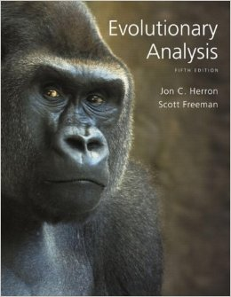
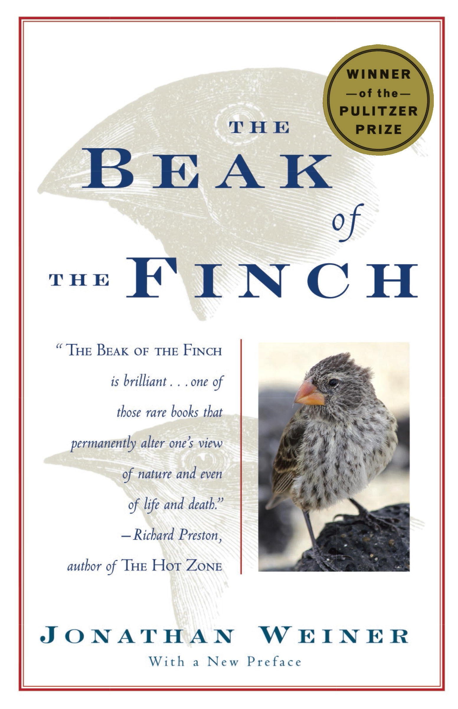

Texts
Evolutionary Analysis
by Herron and FreemanISBN: 0321616677

The Beak of the Finch
by Jonathan WeinerISBN: 0679400036

Schedule
A copy of the schedule can be downloaded here .
| Date | Week | Topic | Reading | Tasks Due |
|---|---|---|---|---|
| Monday, Jan. 4 | 1 | Evening lecture: Introduction-Rob and Victoria’s vision for the course. |
"Beak of the Finch." Dhobzansky, 1976 The Origin of Species, Ch 4. Measey et al., 2007. This paper explains the work on amphibians on the islands of the Gulf of Guinea. |
Assigment 1 Bring 2 hard copies to class. |
| Tuesday, Jan. 5 | 1 | What is Evolution? | Nurse, 2006. This paper gives Nurse’s view of the five most important overarching ideas of biology. | -- |
| Wednesday, Jan. 6 | 1 | The ingredients of evolution part 1: heritable variation | Farhadifar et al., 2015. This wonderful paper explores the variation in the mitotic spindle for nematodes. | -- |
| Thursday, Jan. 7 | 1 | The ingredients of evolution part 2: the forces of evolution - drift and selection |
Section 5.1 in Herron and Freeman. Stringham et al., 2012. This is the very interesting paper on pigeons and the comparison between Darwin’s classification and the molecular picture. |
-- |
| Tuesday, Jan. 12 | 2 | (VJO) A history of life on Earth, Part I. | Herron and Freeman Ch. 18 Radiometric dating The Origin of Species Ch. 4 | Assignment 2. |
| Tuesday, Jan 12. | Lab | Depictions of life on a string (Condensing 3.8 billion years of life's major events in 3 hours). | Bring your computers to lab! | -- |
| Thursday, January 14. | 2 | (VJO) History of life on Earth, Part II. | Handout short essay ‘Fossil discovery and the origins of tetrapods’ by Daeschler and Shubin. pp. 297-310. | -- |
| Tuesday, Jan. 19 | 3 | (VJO) Phylogenetics -- cladistics and the fossil record. | Chapter 4 in Herron and Freeman Zuckerlandl and Pauling, 1965. |
Assignment 3 |
| Tuesday, Jan. 20 | Lab | GASP Lab part I -- Your Inner Fish | -- | -- |
| Thursday, Jan. 21 | 3 | Phylogenetics -- molecular signatures. Molecular clocks and the rise of oxygen. | Chapter 15 in Herron and Freeman Eugene Koonin, 1999. E. Margoliash, 1963. |
-- |
| Tuesday, Jan. 26 | 4 | Guest Lecturer Steve Finkel - Tracking microbial evolution in a test tube. | Finkel and Kolter, 1999 | Assignment 4 |
| Tuesday, Jan. 26 | Lab | GASP lab Part II -- Titer Counting. | -- | -- |
| Thursday, Jan. 28 | 4 | In-class discussion of Chapter 4 of Origin of Species. | -- | -- |
| Tuesday, Feb. 2 | 5 | (RP) Facts of Evolution: Variation | Chapter 5 of Herron and Freeman | Assignment 5 |
| Tuesday, Feb. 2 | Lab | GASP Lab part III -- Final Titer Counts and MATLAB exercise. | -- | -- |
| Thursday, Feb. 4 | 5 | (RP) Forces of Evolution: Heritability | Chapter 7 in Herron and Freeman | -- |
| Tuesday, Feb. 9 | 6 | (RP) FOrces of Evolution: The Genome | Chapter 6 in Herron and Freeman | Assignment 6 |
| Tuesday, Feb. 9 | Lab | Luria-Delbrück Experiment | -- | -- |
| Thursday, Feb. 11 | 6 | Forces of Evolution: Natural Selection | Chapter 3 in Herron and Freeman | -- |
| Tueday, Feb. 16 | 7 | (VJO) Microbial species concept, mechanisms of speciation, coevolution and symbiosis. | Chapter 16 in Herron and Freeman | Assignment 7 |
| Tuesday, Feb. 16 | Lab | TBD: Bird Lab or Luria-Delbrück Experiment Part II | -- | -- |
| Thursday, Feb. 18 | 7 | (VJO) Island Biogeography | -- | -- |
| Saturday, Feb. 20 | 7 | Fieldtrip to Page Museum and Rancho La Brea Tar Pits (9AM - 2PM) | Stock and Harris, 1993. | -- |
| Tuesday, Feb. 23 | 8 | (RP) Human Evolution | Chapter 11 in Herron and Freeman | Assignment 8 |
| Tuesday, Feb. 23 | Lab | TBD: BIrd Lab or Luria-Delbrück Part II | -- | -- |
| Thursday, Feb. 23 | 8 | (RP) Human Evolution Part II | -- | -- |
| Tuesday, Mar. 1 | 9 | Student Presentations | -- | Assignment 9 |
| Tuesday, Mar. 1 | Lab | Group discussion data analysis from bird lab. | -- | -- |
| Thursday, Mar. 3 | 9 | Student Presentations | -- | -- |
| Tuesday, Mar. 8 | 10 | TBD | -- | -- |
| Tuesday, Mar. 8 | 10 | Field trip logistics. Discussion of Galapagos and the Beach of the Finch. | -- | -- |
| Tuesday, Mar. 15 | -- | -- | -- | -- |
| Thursday, Mar. 17 | -- | Galapagos! | -- | -- |